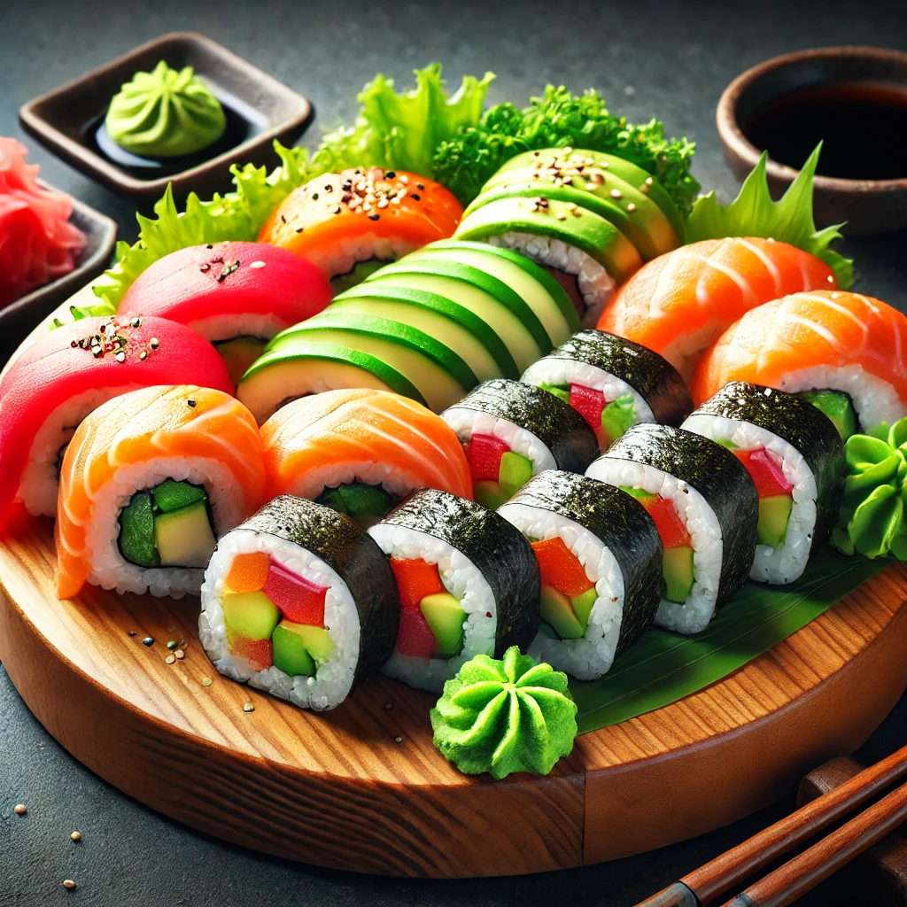

THE BUSTY MERMAID

Sea Serpent Sushi Rolls
Ingredienser og Oppskrift:
Velkommen til Sea Serpent Sushi Rolls – en sushibit som er så god at sjøormene selv måtte gjøre en avtale om å ikke sluke dem! Denne utsøkte retten kombinerer den perfekte blandingen av sjømat og krydder, så du føler at du er på et eventyr under havets overflate.
Så, hva finner du i denne eventyrlige retten? Her er oppskriften på de legendariske Sea Serpent Sushi Rolls:
- 1 pakke **sushiris** (møt havets "lim", som binder alle smakene sammen)
- Frisk **laks** og **tunfisk** (det beste fra havet – de fineste fiskene for de modigste sjøfarerne)
- Skiver med **avokado** (for den glatte, kremete teksturen som gjør det til en drøm)
- Et snev av **sesamfrø** (for et knasende element i denne sjømatdrømmen)
- En dash **soyasaus** (som et magisk krydder fra havets bølger)
Hvordan lage denne retten:
- Legg et noriark på sushimatten.
- Spred et jevnt lag med sushiris på noriarket, og pass på å trykke lett for at det holder seg.
- Legg fisk, avokado og sesamfrø på toppen av risen.
- Rull sushi-rullen stramt og skjær den i biter av ønsket størrelse.
- Dypp bitene i soyasaus, og nyt smaken av havet!
OBS: Denne retten er kjent for å gi deg eventyrlige krefter og en uimotståelig lyst til å jakte på sjømonstre!